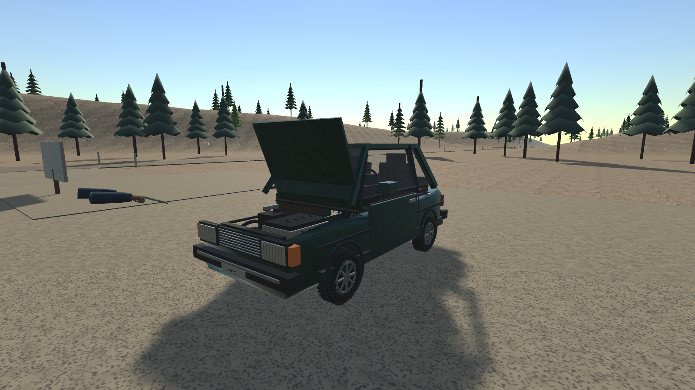
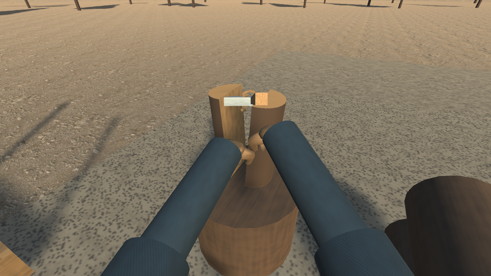
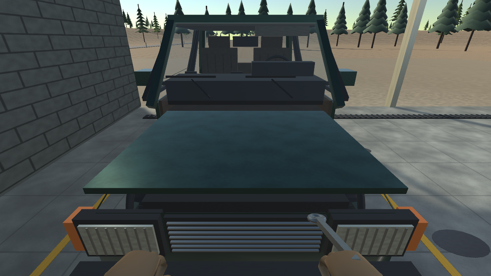

SUOMALAINEN AUTOTALLISIMULAATTORI
FINNISH
GARAGE
SIMULATOR.
Vanha auto. Oma talli.
Ja aina jotain laitettavaa.
Rakennamme peliä suomalaisesta autoharrastuksesta ja arjesta. Korjaa, ansaitse ja lähde tien päälle — omaan tahtiisi.
Windows PC · Kehityksessä · Ei julkista demoa

YHDESTÄ PROJEKTISTA.
01 / PELIN IDEA
OMASSA TALLISSA
EI TULE VALMISTA.
Seuraava korjaus. Ensimmäinen koeajo. Vielä yksi mutka ennen kotiinlähtöä.
Finnish Garage Simulatorin ytimessä on auton laittaminen itse. Projektiauto hankitaan, vikaa tutkitaan ja osat vaihdetaan omin käsin. Työt tuovat pelin sisäisiä krediittejä seuraavaan varaosaan.
Tavoitteena on avoin suomalainen maaseutu, jossa voit seurata pääjuonta tai puuhailla omien projektiesi parissa. Kesä, talvi ja soratiet tuovat omat haasteensa.
Millaista peliä rakennamme? ↗02 / TALLISTA TIEN PÄÄLLE
TYÖTÄ, JOKA
TUNTUU OMALTA.
Näitä kokonaisuuksia kehitämme ja testaamme. Sisältö ja toteutukset voivat vielä muuttua.
- 01
Korjaa omin käsin
Osat irti, oikea varaosa paikalleen ja pultit kiinni. Kunnolla on merkitystä.
- 02
Ansaitse seuraava projekti
Asiakastöitä, varaosahankintoja ja fyysisiä puutöitä. Pelin talous käyttää fiktiivisiä CR-krediittejä.
- 03
Lähde kokeilemaan
Ajomallia kehitetään osien kunnon, rengasvalintojen ja vaihtelevan pidon ympärille.

03 / KUVIA MATKAN VARRELTA
PIENI KURKISTUS
PELLIN ALLE.
Kuvat ovat omista varhaisista kehitysversioista. Grafiikka, 3D-mallit, animaatiot ja ympäristö eivät ole lopullisia.

04 / MISSÄ MENNÄÄN
VIELÄ TALLISSA.
EI LÄHTÖVIIVALLA.
Pelistä rakennetaan toimivaa kokonaisuutta pala kerrallaan. Tällä sivulla kerromme projektin suunnasta ja kehityksen etenemisestä.
Kysy kehityksestä ↗Peli on kehityksessä.
Demoa ei vielä ole.
Julkista demoa, avointa testiversiota tai pelin latausta ei ole tällä hetkellä saatavilla.
- Työn alla
- Pelimekaniikat, ajotuntuma, grafiikka ja maailman sisältö
- Suunniteltu julkaisusuunta
- Windows PC · Steam Early Access
- Julkaisupäivä ja hinta
- Ei vielä vahvistettu
Early Access on tavoite. Julkaisuajankohtaa tai Steam-kauppasivua ei ole vahvistettu.
05 / HYVÄ TIETÄÄ
MUUTAMA
SUORA VASTAUS.
Voiko peliä tai demoa jo ladata?
Ei. Peli on kehityksessä, eikä julkista demoa tai avointa testiversiota ole vielä saatavilla. Mahdollisesta demosta kerrotaan tällä sivulla, kun se on ajankohtainen.
Mille alustalle peliä kehitetään?
Ensisijainen alusta on Windows PC. Muita alustoja ei ole vahvistettu. Myöskään lopullisia vähimmäisvaatimuksia ei ole vielä julkaistu.
Onko tämä avoimen maailman peli?
Kehityksen tavoitteena on avoin suomalainen maaseutu ja seurattava pääjuoni. Maailman laajuus, sisältö ja tehtävät ovat vielä työn alla.
Milloin peli julkaistaan Steamissa?
Suunnittelemme Windowsille Early Access -julkaisua. Julkaisupäivää, hintaa tai Steam-kauppasivua ei ole vielä vahvistettu.
Näyttääkö valmis peli kehityskuvien kaltaiselta?
Kehityskuvat näyttävät prototyypin todellisen tilanteen kuvaushetkellä. Tilapäisiä malleja, grafiikkaa ja animaatioita on tarkoitus kehittää eteenpäin. Lopullista ulkoasua ei vielä luvata.
Toimiiko peli ratilla tai peliohjaimella?
Hiiri ja näppäimistö ovat nykyisen kehitysversion ohjaustapa. Ratti-, poljin- ja peliohjaintuki ovat vahvistamatta. Lisää alustasta ja ohjauksesta →
06 / PIDETÄÄN YHTEYTTÄ
TERVEISIÄ
TALLILLE?
Palautetta, kysymyksiä tai ajatuksia pelin suunnasta? Kehittäjään saa yhteyden sähköpostilla.
Ota yhteyttä